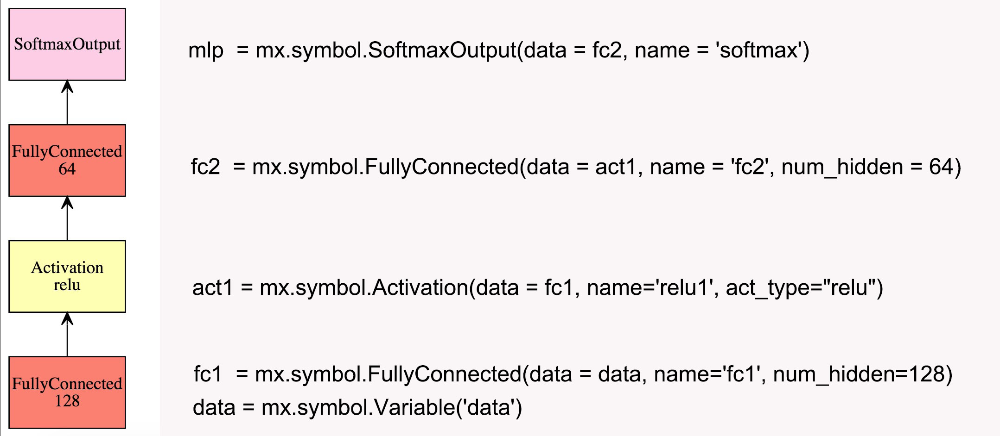
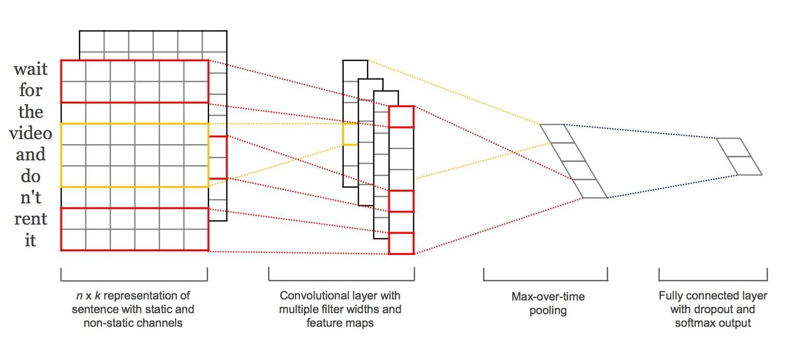

yalei
M : mix, 混合符号编程(symbolic programming)和命令式编程(imperative programming)
X: maximize, 特制效率的提升
高效，支持多核并行
可移植，目前有R,Python,Julia,Matlab和Scala等接口。可在单机，集群甚至手机端运行
可扩展，支持单机多卡和多机并行
数据结构: mxnet.NDArray
网络定义: mxnet.symbol 核心接口
数据传输: mxnet.io
优化器: mxnet.optimize
模型接口: 模型的载入，存贮以及fine-tune等
MXNet的基础数据结构，类似于numpy的array结构。存贮和计算均支持CPU和GPU的切换，并且有惰性求值的功能。
import mxnet as mx
a = mx.nd.ones((20000, 30000), mx.gpu()) # 存贮在GPU上
b = mx.nd.ones((30000, 20000), mx.gpu())
d = mx.nd.dot(a, b)
# 至此a,b,d都只是符号链接，并没真正赋值
d.asnumpy() # run
其他常用诸多操作于都跟numpy类似，学习成本较低。
系统的核心接口，用于定义神经网络的结构，语法简单，自动检测数据纬度。

data = mx.symbol.Variable('data')
fc1 = mx.symbol.FullyConnected(data = data, name='fc1', num_hidden=128)
act1 = mx.symbol.Activation(data = fc1, name='relu1', act_type="relu")
fc2 = mx.symbol.FullyConnected(data = act1, name = 'fc2', num_hidden = 64)
mlp = mx.symbol.SoftmaxOutput(data = fc2, name = 'softmax')
arg_shape, out_shape, aux_shape = mlp.infer_shape(data=(100, 100))
>>> dict(zip(mlp.list_arguments(), arg_shape)) # 每层参数纬度
{'data': (100L, 100L),
'fc1_weight': (128L, 100L), 'fc1_bias': (128L,)
'fc2_weight': (64L, 128L), 'fc2_bias': (64L,),
'softmax_label': (100L,),}
>>> out_shape # 输出结果纬度
[(100L, 64L)]
Convolutional Neural Networks for Sentence Classification 
常用IO接口:
NDArrayIter: 用于常规的array数据
CSVIter: 用于csv文件
ImageRecordIter: 用于图片文件
节省数据处理时间，如shuffle和定义batch_size等操作。
train_data = {'data': np.array(), 'label': np.array()}
test_data = {'data': np.array(), 'label': np.array()}
train_iter = mx.io.NDArrayIter(train_data['data'].reshape([17000, 1, 200, 200]),
train_data['label'], batch_size=50, shuffle = True)
test_iter = mx.io.NDArrayIter(test_data['data'].reshape([3000, 1, 200, 200]),
test_data['label'], batch_size=100, shuffle = True)
im2rec 工具，将图片和标签打包成单文件，节省磁盘空间并有利于数据读取。
./im2rec image.lst image_dir image.bin resize=256 # image.lst 图片文件列表
img_lst_path = '/User/yaleI/alphawolf_data/img/img.rec'
dataiter = mx.io.ImageRecordIter(path_imgrec=img_lst_path,
batch_size=128,
preprocess_threads=4,
data_shape=(3, 250, 370), # 切割图片
shuffle=True, # 随机打散
rand_crop=True, # 随机切割部分像素
rand_mirror=True, # 随机翻转
mean_img="data/cifar/cifar10_mean.bin",
)
可根据基础类io.DataIter自定义IO类。
网络结构和数据准备好后，开始训练
model = mx.model.FeedForward.create(
symbol = mlp,
num_epoch=num_epoch,
learning_rate=0.01)
model.fit()
prefix = 'mymodel'
iteration = 100
# 保存*.parameter(参数值) 和＊json(网络图) 两个文件
model.save(prefix, iteration)
# 加载已有模型
model_loaded = mx.model.FeedForward.load(prefix, iteration)
# fine-tune
model_loaded.fit(***)
Yelp Restaurant Photo Classification
No.1 Solution: 使用了三个Pre-trained Model生成组合feature，再用多种分类模型组合投票
No.4 Solution: 在Inception-V3 Network基础上进行Fine-tune，然后使用SVM，RF等模型组合做预测